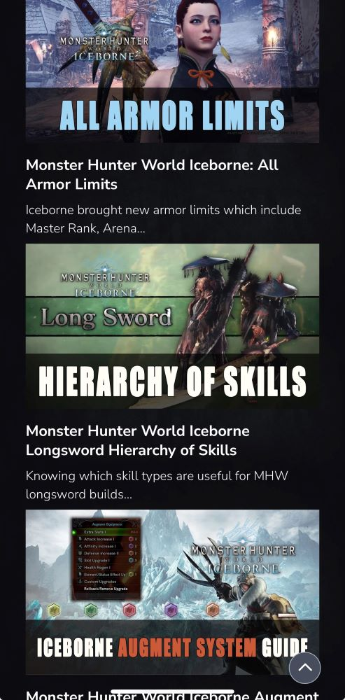
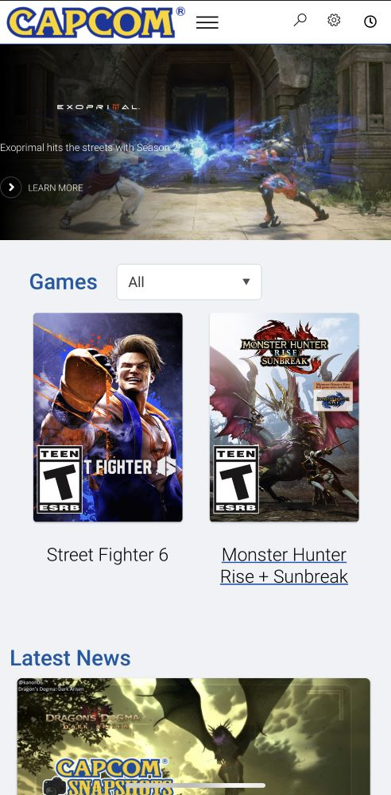

Visual Hierarchy
A Predominantly Black Candle Haus

This website show's Visual Hierarchy by making their candles the main focus which makes it easy for the user to know what products they are focused on selling. The candles are the biggest parts of the page while everything else surrounds them.
Repetition
FextraLife
This website shows Repetition by using the same image, text descriptions layout for each guide they post. They use the same fonts for headers and paragraphs.
White Space and Clean Design
Capcom
This website uses white space to simplfy the website. It also helps focuses on what the games they are trying to showcase. It makes the website very easy to read